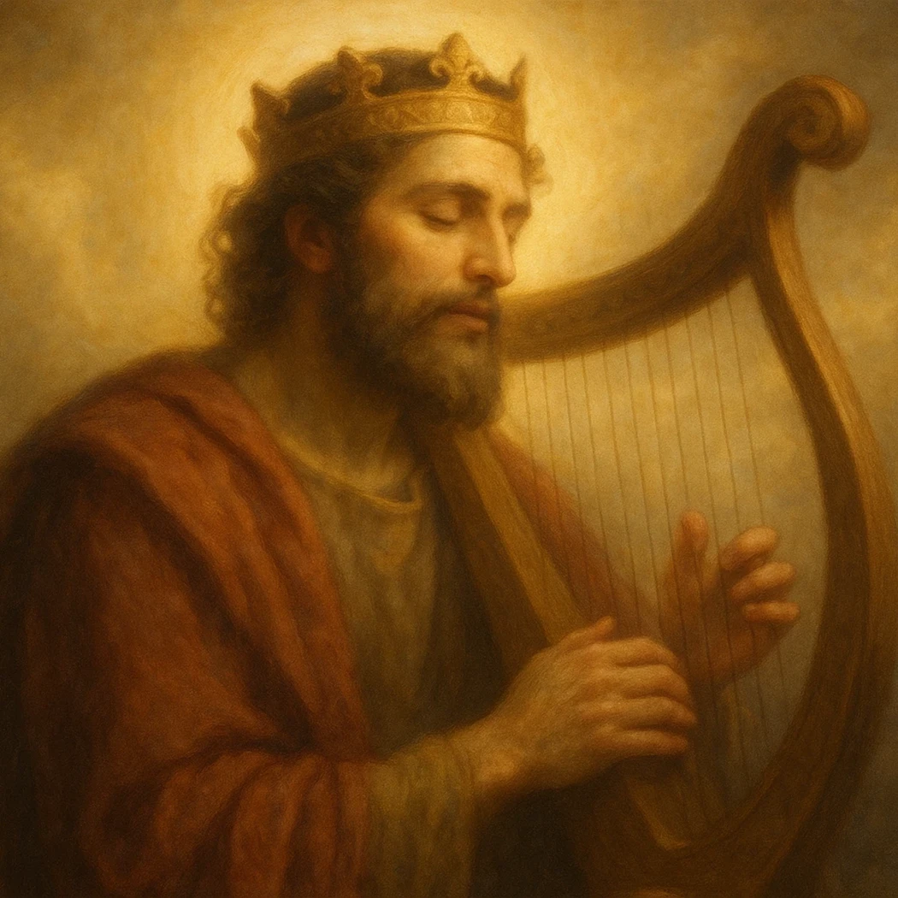
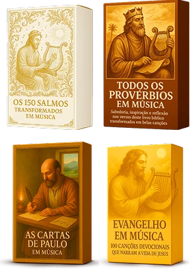
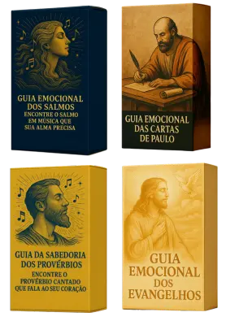
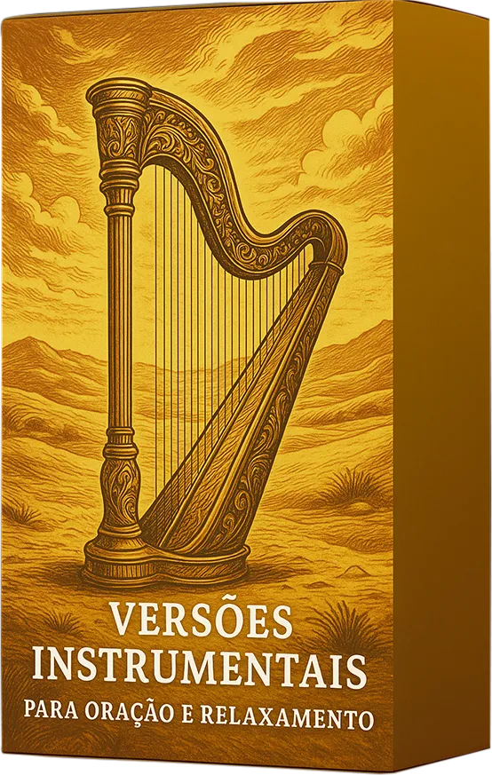

Testemunhos de Fé: Veja Como a Bíblia em Música Transforma Vidas


Salmos, Provérbios, Cartas de Paulo e os Evangelhos em melodias poderosas. Ouça, cante e aprofunde sua fé onde estiver — sem precisar de internet.
Após baixar todas as músicas, você poderá ouvir onde e como quiser, sem precisar de internet.

Valor promocional exclusivo nessa página:
De: R$ 57,00
Por apenas:
R$ 1,99
Músicas que transformam a leitura da Bíblia em louvor, meditação e crescimento espiritual.
Durante séculos, a Palavra de Deus foi lida, estudada e recitada.
Agora, ela pode ser sentida, cantada e vivida.
A Bíblia em Música é um projeto exclusivo que reuniu todas as letras dos Salmos, Provérbios, as Cartas de Paulo e a jornada de Jesus (Evangelhos) e transformou tudo em canções belíssimas, prontas para ouvir, adorar e aprender.

Quero acessar a Bíblia em Música agora
O devocional perfeito para momentos de angústia, alegria e gratidão. Cada salmo foi lindamente transformado em uma música emocionante, mantendo a fidelidade das palavras de Davi.
13 canções devocionais com os ensinamentos do apóstolo Paulo sobre graça, amor, conduta e a vida eterna. Letras profundas que trazem força e renovação para o seu dia.
Os conselhos de sabedoria mais inspiradores de Salomão transformados em músicas práticas que guiam decisões diárias sobre finanças, relacionamento, caráter e disciplina.
Mais de 100 músicas que percorrem a vida de Jesus — desde o anúncio a Maria até Sua gloriosa ressurreição. Você vai viver a trajetória do Mestre cantando os grandes milagres e parábolas.
A Bíblia em Música é o único material que transforma as escrituras sagradas em experiências sonoras memoráveis. Um tesouro espiritual em formato de música para você, sua família, líderes e qualquer pessoa que deseja viver a Palavra de forma mais profunda e marcante.
A Bíblia não é apenas um livro antigo!
É uma fonte viva de sabedoria, consolo e direção.
E agora, você pode experimentá-la em forma de canção...
Você vai ouvir, cantar e viver as Escrituras.
Uma jornada que começa nos Salmos e termina na ressurreição de Cristo.
Quero acessar a Bíblia em Música agoraCanções devocionais que tocam a alma e criam um ambiente de adoração.
Todas as letras foram baseadas diretamente no texto bíblico, em forma poética e fiel.
Ajuda a memorizar versículos e aplicar os ensinamentos no dia a dia.
Permite que você viva a Palavra com emoção, entendimento e fé genuína.
"Cada projeto foi cuidadosamente desenvolvido com base nas Escrituras Sagradas, traduzindo a sabedoria e o amor de Deus em músicas que transformam o ambiente e tocam o coração."
Ter um devocional musical diário.
Se aprofundar espiritualmente com leveza.
Memorizar versículos com facilidade.
Compreender melhor os ensinamentos de Jesus e dos apóstolos.
Fortalecer a fé e tomar decisões com sabedoria.
Criar um ambiente de adoração em casa, no trabalho ou nos momentos de oração.
4 coleções completas: Salmos, Provérbios, Cartas e Evangelhos.
351 músicas devocionais em alta qualidade (MP3).
Letras poéticas e fiéis às Escrituras.
PDFs com acompanhamento de cada música.
Acesso digital vitalício (celular, tablet ou computador).
que custam mais de R$ 400,00

Aprenda a aplicar as emoções contidas na Bíblia no seu contexto diário.
Um material passo a passo para criar o hábito diário de ouvir e orar a Palavra.

Músicas em formatos propícios para os seus momentos a sós com Deus.
Descubra em mapas ilustrados as trajetórias dos heróis da fé.
Técnicas exclusivas baseadas em associação musical para guardar os versículos no coração.
Você tem 7 dias para testar. Se não sentir sua fé fortalecida, devolvemos 100% do seu investimento!
De R$ 399,00
Por apenas:
R$ 27,90
De R$ 57,00
Por apenas:
R$ 1,99
A Bíblia em Música foi criada para quem busca se aproximar de Deus com leveza e profundidade.
As melodias, letras e estudos visuais foram pensados para que você entenda, memorize e viva os ensinamentos da Bíblia de forma prática.